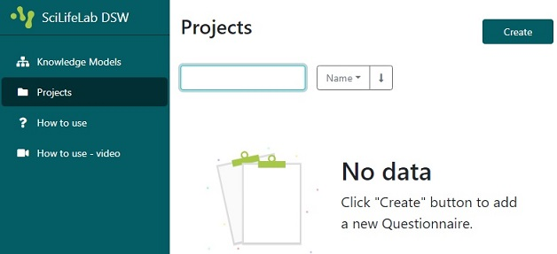
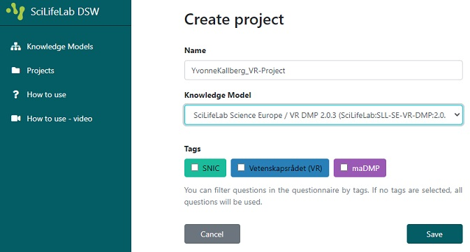

Instructions on how to start writing a DMP
- Click on Projects in left-side menu
- Click on Create in the top right corner

- Name the project and select Knowledge Model
- Write a Name based on your name and project, so it is easy to find later
- Select
SciLifeLab Science Europe / VR DMP 2.0.3 (or the highest version number) as Knowledge Model
- Click on Save and begin answering the questions

Note: Select the SNIC tag if you only want to see questions of interest in a SNIC application.